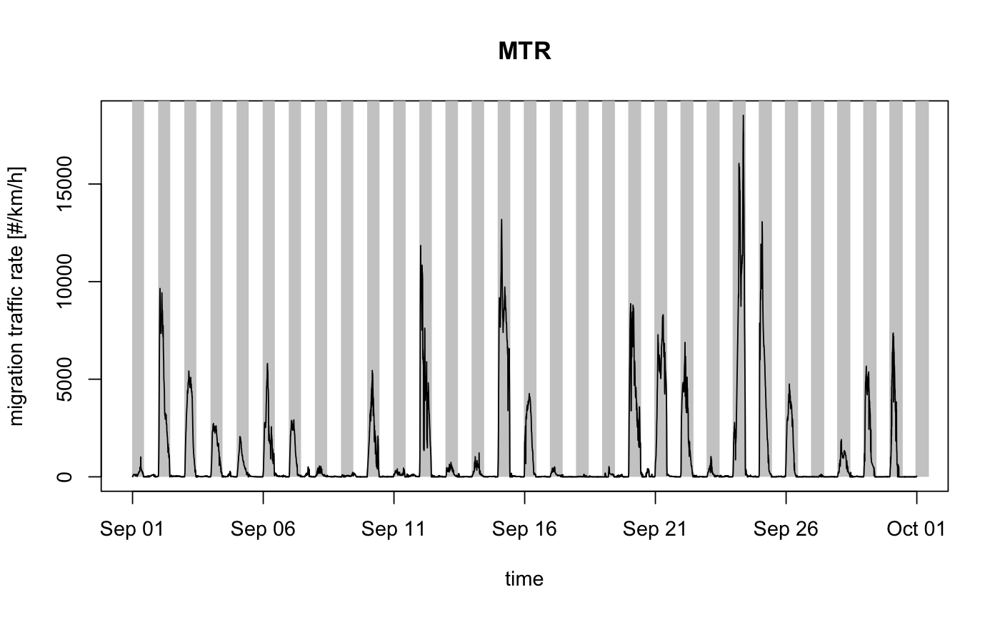
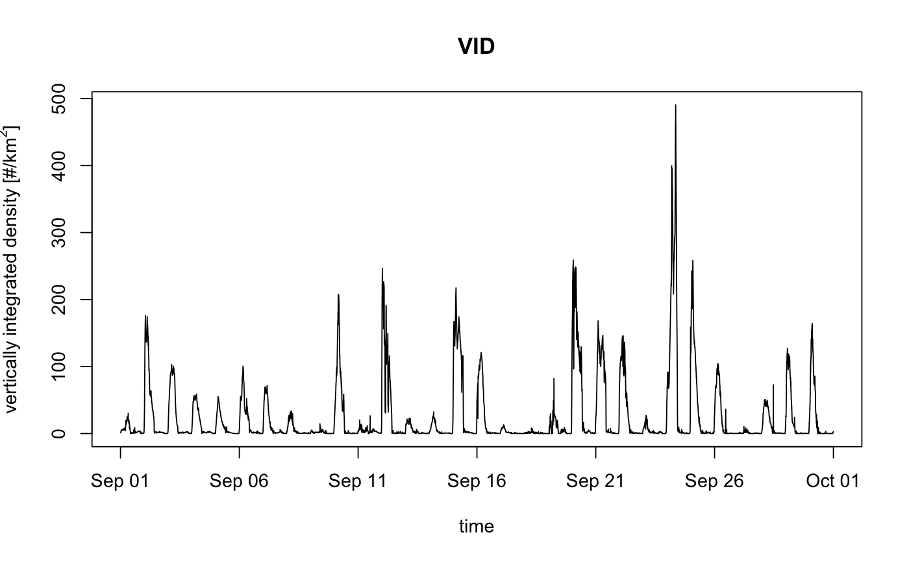

Plot an object of class vivp.
# S3 method for vivp plot(x, quantity = "mtr", xlab = "time", ylab = "migration traffic rate [#/km/h]", main = "MTR", nightshade = TRUE, elev = -0.268, lat = NULL, lon = NULL, ylim = NULL, ...)
| x | a class object inheriting from class |
|---|---|
| quantity | character string with the quantity to plot, one of ' |
| xlab | a title for the x-axis |
| ylab | a title for the y-axis |
| main | a title for the plot |
| nightshade | logical. whether to plot night time shading |
| elev | numeric. sun elevation to use for day/night transition, see suntime |
| lat | (optional) latitude in decimal degrees. Overrides the lat attribute of |
| lon | (optional) longitude in decimal degrees. Overrides the lon attribute of |
| ylim | y-axis plot range, numeric atomic vector of length 2 |
| ... | Additional arguments to be passed to the low level plot plotting function |
Profile can be visualised in three related quantities, as specified by argument quantity:
vid"Vertically Integrated Density, i.e. the aerial surface density of individuals. This quantity is dependent on the assumed radar cross section per individual (RCS)
vir"Vertically Integrated Reflectivity. This quantity is independent of the value of individual's radar cross section
mtr"Migration Traffic Rate. This quantity is dependent on the assumed radar cross section (RCS)
rtr"Reflectivity Traffic Rate. This quantity is independent on the assumed radar cross section (RCS)
# vertically integrate a vpts object: vi.vpts=vintegrate(VPTS) # plot the migration traffic rates plot(vi.vpts)# plot the vertically integrated densities, without night shading: plot(vi.vpts,quantity="vid",nightshade=FALSE)